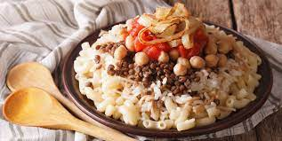

KOSHARI

Description
Koshari, kushary or kushari is Egypt's national dish and a widely popular street food. A traditional Egyptian staple, mixing pasta, rice and brown lentils, and topped with a zesty tomato sauce, garlic vinegar and garnished with chickpeas and crispy fried onions.
It is a popular breakfast dish in Egypt, and the name literally translates to "food for the poor". Relating to the fact that it is cheap and widely accessible.
Here's how you can make a classic Kosharic dish:
Ingredients
- 4 medium onions (about 1.5 lbs)
- 1 cup dried chickpeas (or 2 - 15 ounce cans of chickpeas)
- bag of 1 lb spaghetti
- 1 bag of 1 lb elbow pasta
- 1 cup dried brown lentils
- 2 cups dry Calrose rice (or short-grain rice) **See note 4
- 8 whole tomatoes (about 2 lbs or 1 kg in weight)
- 2 tbsp tomato paste
- 9 garlic cloves
- 1 bell pepper (size of a clenched fist)
- 1 tbsp white vinegar
- ground cumin
- ground coriander
- 2 limes
- oil for frying (preferably sunflower oil)
- flour (to toss the onions in prior to frying)
- salt and pepper to taste
- ½ tsp sugar
- chili flakes or cayenne powder (optional)
- 1 spicy chili (optional)
Procedure
- PREPARE THE CHICKPEAS
Boil 1 cup of dried chickpeas until semi-cooked (about 45 minutes to an hour). Drain water.
Add fresh water and ½ tablespoon of cumin. Boil chickpeas a second time for another 30 minutes.
Once chickpeas are cooked, squeeze ½ of a lime over chickpeas.
- FRY THE ONIONS
Chop 2 medium onions into circles. Mix with flour and set aside for 30 minutes prior to frying.
Fry in oil, preferrably sunflower oil. Using a frying spatula, remove the onions from the oil. Set onto a paper towel and set aside.
Keep the sunflower oil to use some of it in other parts of the recipe.
- MAKE THE FRESH RED SAUCE
Blend 3 tomatoes, 1 bell pepper, ½ medium onion, and 3 garlic cloves in the food processor.
If you would like a spicy sauce, add 1 spicy pepper.
Add ½ teaspoon of ground cumin, ½ teaspoon of ground coriander, 1 tablespoon of oil (from the fried onions), salt, and pepper. Add juice from 1 lime.
Blend and set aside.
- BLEND THE KOSHARI RICE
Blend 1.5 medium onions in a food processor.
In a high-rimmed stovetop pot, add 2 tablespoon of oil (from the fried onions). Cook the onions on medium heat for about 15 minutes.
Add the brown lentils (these will be about 2.25 cups after being soaked) and 3 cups of water. Bring to a boil. Boil for 5 minutes.
Turn down heat to medium-low. Add 2 cups of dry rice and 1 more cup of water.
Add salt and pepper. Mix the koshari rice and cover.
Continue to cook on medium-low heat covered until the rice has finished cooking (about 12 minutes).
Turn off the stove and allow the rice to rest covered for 5 minutes.
- MAKE THE PASTA
Boil water and add about 1 tablespoon of salt.
Break the spaghetti pasta in half, then break the half again making quarter-size sections of spaghetti. Break about 15 spaghetti noodles at the same time.
Add the spaghetti pasta and elbow pasta to the boiling water.
Cook the pasta until desired firmness.
Drain the pasta and set it aside.
- VINEGAR RED SAUCE
Blend 5 medium tomatoes in a blender. Strain tomatoes into a bowl.
Fry 2 tablespoon of oil (or ghee) with 1 teaspoon chili flakes (or chili powder) for 30 seconds then add 5 minced garlic cloves.
Add 2 tablespoon of tomato paste and 2 tablespoon of vinegar for about 30 seconds before adding the blended tomatoes.
Add 1 teaspoon of cumin, 1 teaspoon of coriander, 1 teaspoon of salt, ½ teaspoon sugar, and 1 teaspoon of ground pepper.
Boil for about 10 minutes.
Your Koshari is ready. plate as desired and Bon appetite